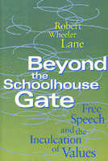

A pragmatic inquiry into student speech, public schooling and the First Amendment
A pragmatic inquiry into student speech, public schooling and the First Amendment


 A pragmatic inquiry into student speech, public schooling and the First Amendment
A pragmatic inquiry into student speech, public schooling and the First Amendment

|  |
Beyond the Schoolhouse GateFree Speech and the Inculcation of ValuesRobert Wheeler Lanepaper EAN: 978-1-56639-275-4 (ISBN: 1-56639-275-6) |
Outstanding Academic Title, Choice, 1995
"What makes Lane's approach unique is that he weaves together different perspectives on the nature of school into a very colorful but informative and lucid tapestry that seeks the outer limits of free expression within the boundaries of the school context, always with an eye toward promoting the goal of inculcation of values, a worthy end for students and school officials alike."
—Samuel M. Davis, Allen Post Professor of Law, University of Georgia
In a 1969 landmark case, the U.S. Supreme Court ruled that the suspension of student for protesting the Vietnam War violated the First Amendment.
In 1972, the U.S. court of appeals upheld the suspension of black high school students for protesting the playing of "Dixie" at a pep rally.
In 1986, a U.S. district court ruled that the suspension of a student for directing a vulgar gesture at one of his school teachers in a fast-food restaurant was unconstitutional.
On what grounds do public school students merit First Amendment protection? These three examples illustrate the broad range of litigation that has attempted to answer this question. Robert Wheeler Lane reviews the obstacles of this important issue and suggests a mix of protection and autonomy for students.
Pulling together evidence about the aims of public education, the changing legal status of children, and the values underlying freedom of expression, Lane debates the relationship between constitutional litigation and the dual pursuits of academic excellence and classroom order. Ultimately, utilizing both lower court and Supreme Court decisions, he finds that independent student expression deserves considerable constitutional protection; student expression assisted by school officials (such as school-funded student newspapers) should be subject to some control; and nonstudent expression (such as a school's selection of library books) should be left largely to the school's discretion. His conclusions suggest that in forging First Amendment protection for public school students, strongly held positions need not be extreme.
Excerpt available at www.temple.edu/tempress
"How congruent are the aims of public education and free-speech principles? What problems arise in reconciling the inculcative function (the transmission of values) of public schooling with free speech? Commentators often find this relationship adversarial, so that advancing one requires hindering the other. David Diamond, for example, exalts the inculcative function and argues that, since the principal business of public education is indoctrination, our public schools embody the denial of First Amendment rights. Conversely, another commentator concludes that the severe conflict between free speech and inculcation requires school officials to abandon the latter. Even those who try to reconcile free speech with the inculcative function view them as being inherently adversarial. However, while tension does exist between the aims of the First Amendment and the inculcation of values by public school officials, the relationship is more subtle and less oppositional than is typically noted.
"My examination of this relationship entails four related claims. First, the liberal principles that underpin adult free speech are tenuous and are not presumptively valid for children. Moreover, the aims of free speech and public education are both congruent and conflictive. Third, the inculcative function should play an instrumental role in establishing student free-speech aims. Together, these claims lay the groundwork for a more subtle, sophisticated approach to conferring First Amendment rights upon public school students"
—From Chapter 3, "Free Speech and Public Education"
Acknowledgments
1. Pursuing Excellence and Order
2. The Emergence of Children's Rights
3. Free Speech and Public Education
4. A Focused Balancing Alternative
5. Tolerating Student Speech
6. Assisting Student Expression
7. Access to Information and Ideas
8. A Matter of Degree
Notes
Index
Robert Wheeler Lane is Assistant Professor, Department of Political Science, Saginaw Valley State University.
© 2015 Temple University. All Rights Reserved. This page: http://www.temple.edu/tempress/titles/1062_reg.html.